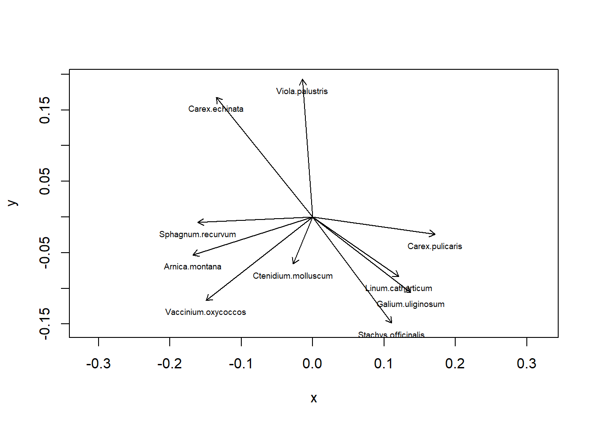

#Mit Beispieldaten aus Wildi (2013, 2017)
library(labdsv)
library(dave) # lade package für Daten sveg
head(sveg) Vaccinium.myrtillus Vaccinium.uliginosum Vaccinium.oxycoccos
501 0 0 2
502 1 2 1
503 1 1 1
504 1 0 1
505 1 1 1
506 1 1 2
Calluna.vulgaris Carex.rostrata Carex.lasiocarpa Carex.nigra
501 1 0 0 2
502 3 0 2 1
503 0 0 2 0
504 0 1 1 0
505 1 0 2 1
506 1 0 2 1
Carex.davalliana Carex.hostiana Carex.pauciflora Carex.echinata
501 0 0 0 2
502 0 0 0 0
503 0 0 0 1
504 0 0 1 2
505 0 0 0 1
506 0 0 0 2
Carex.panicea Trichophorum.caespitosum Trichophorum.alpinum
501 0 2 1
502 0 2 0
503 1 1 1
504 0 0 0
505 1 0 0
506 0 1 0
Eriophorum.vaginatum Eriophorum.latifolium Eriophorum.angustifolium
501 0 0 1
502 1 0 2
503 0 0 1
504 1 0 1
505 0 0 1
506 0 0 1
Tofieldia.calyculata Pinguicula.vulgaris Parnassia.palustris
501 0 0 0
502 0 0 0
503 0 0 0
504 0 0 0
505 0 0 0
506 1 0 0
Rhynchospora.alba Drosera.rotundifolia Arnica.montana Dactylorhiza.maculata
501 0 1 1 1
502 0 0 0 1
503 0 0 2 1
504 0 1 1 1
505 0 1 1 0
506 0 1 1 1
Polytrichum.strictum Succisa.pratensis Anthoxanthum.odoratum
501 1 0 1
502 1 1 1
503 1 1 1
504 1 0 1
505 1 1 1
506 1 1 1
Molinia.caerulea Gentiana.asclepiadea Luzula.multiflora Festuca.rubra
501 1 1 0 0
502 2 1 1 0
503 2 1 1 0
504 1 1 0 0
505 1 1 0 0
506 2 1 0 0
Potentilla.erecta Sphagnum.magellanicum Sphagnum.papillosum
501 2 2 1
502 1 0 1
503 1 1 1
504 2 1 1
505 1 3 1
506 2 3 0
Equisetum.palustre Aulacomnium.palustre Euphrasia.rostkoviana
501 1 2 0
502 1 1 0
503 2 1 0
504 2 1 0
505 1 1 0
506 1 1 0
Nardus.stricta Carex.pulicaris Climacium.dendroides Carex.pallescens
501 0 0 0 0
502 1 0 0 0
503 1 0 0 1
504 0 0 0 0
505 1 0 0 0
506 1 0 0 0
Carex.lepidocarpa Briza.media Sphagnum.platyphyllum Sphagnum.tenellum
501 0 0 0 0
502 0 0 0 0
503 0 1 0 0
504 0 0 0 0
505 0 1 0 0
506 0 0 0 0
Sphagnum.recurvum Sphagnum.rubellum Sphagnum.centrale Sphagnum.subsecundum
501 5 1 0 0
502 2 1 0 0
503 6 2 0 0
504 6 1 0 0
505 2 2 0 0
506 3 1 0 0
Juncus.alpinoarticulatus Solidago.virgaurea Agrostis.canina Juncus.effusus
501 0 2 1 1
502 0 1 0 0
503 0 1 1 1
504 0 1 1 1
505 0 0 1 1
506 0 1 0 0
Frangula.alnus Anemone.nemorosa Holcus.lanatus Drepanocladus.exannulatus
501 0 0 0 0
502 0 0 0 0
503 1 0 1 0
504 1 0 0 0
505 0 2 1 0
506 0 1 1 0
Homogyne.alpina Polygala.vulgaris Trollius.europaeus Polygonum.bistorta
501 0 0 0 0
502 1 0 0 0
503 0 0 0 0
504 0 0 0 0
505 0 0 0 0
506 0 0 0 0
Lotus.pedunculatus Trifolium.pratense Taraxacum.palustre
501 0 0 0
502 0 0 0
503 0 0 1
504 0 0 0
505 1 0 0
506 0 0 0
Campylium.stellatum Cirsium.palustre Lysimachia.vulgaris
501 0 0 0
502 0 0 1
503 0 1 1
504 0 0 1
505 0 0 0
506 0 0 0
Maianthemum.bifolium Equisetum.sylvaticum Centaurea.jacea
501 1 0 0
502 1 1 0
503 1 1 0
504 1 1 0
505 1 0 0
506 1 0 0
Prunella.grandiflora Viola.palustris Angelica.sylvestris
501 0 0 0
502 0 0 0
503 0 1 0
504 0 0 0
505 0 0 0
506 0 0 0
Filipendula.ulmaria Thuidium.delicatulum Sanguisorba.officinalis
501 0 0 0
502 0 1 0
503 0 0 0
504 0 0 0
505 0 0 0
506 0 1 0
Galium.uliginosum Epipactis.palustris Pleurozium.schreberi
501 0 0 1
502 0 0 2
503 1 0 1
504 0 0 1
505 0 0 1
506 0 0 0
Calliergon.stramineum Aster.bellidiastrum Hypnum.bambergeri
501 1 0 0
502 0 0 0
503 1 0 0
504 1 0 0
505 1 0 0
506 0 0 0
Drepanocladus.revolvens Dicranum.bonjeanii Dicranum.scoparium
501 0 1 0
502 0 0 1
503 0 0 0
504 0 0 0
505 0 0 0
506 0 1 0
Hylocomium.splendens Rhytidiadelphus.squarrosus Calliergonella.cuspidata
501 1 1 0
502 1 1 0
503 0 1 0
504 1 1 0
505 1 1 0
506 1 1 0
Fissidens.adianthoides Primula.veris Primula.farinosa Hieracium.lachenalii
501 0 0 0 0
502 0 0 0 1
503 0 0 0 0
504 0 0 0 0
505 0 0 0 1
506 0 0 0 1
Crepis.paludosa Leontodon.hispidus Lotus.corniculatus Stachys.officinalis
501 0 0 0 0
502 0 0 0 0
503 0 0 0 0
504 0 0 0 0
505 1 0 0 0
506 0 0 0 0
Carex.flacca Gentiana.verna Geranium.sylvaticum Ranunculus.nemorosus
501 0 0 0 0
502 0 0 0 0
503 0 0 0 0
504 0 0 0 0
505 0 0 0 1
506 0 0 0 0
Linum.catharticum Cirsium.oleraceum Colchicum.autumnale Polygala.amarella
501 0 0 0 0
502 0 0 0 0
503 0 0 0 0
504 0 0 0 0
505 0 0 0 0
506 0 0 0 0
Polygala.serpyllifolia Equisetum.arvense Deschampsia.cespitosa
501 0 0 0
502 0 0 0
503 0 0 1
504 0 0 0
505 0 0 0
506 0 0 0
Rhinanthus.minor Gymnadenia.conopsea Melampyrum.pratense Salix.spec.
501 0 0 0 1
502 0 0 0 0
503 0 0 0 0
504 0 0 0 0
505 0 0 0 0
506 0 0 1 0
Caltha.palustris Dactylorhiza.fistulosa Platanthera.bifolia
501 0 0 0
502 0 0 0
503 0 0 0
504 1 0 0
505 0 0 0
506 0 0 0
Acer.pseudoplatanus Danthonia.decumbens Drepanocladus.spec.
501 0 0 0
502 0 0 0
503 0 0 0
504 0 0 0
505 0 0 0
506 0 0 0
Tomentypnum.nitens Ctenidium.molluscum
501 0 0
502 0 0
503 0 0
504 0 0
505 0 0
506 0 1str(sveg)'data.frame': 63 obs. of 119 variables:
$ Vaccinium.myrtillus : int 0 1 1 1 1 1 1 0 0 1 ...
$ Vaccinium.uliginosum : int 0 2 1 0 1 1 1 1 0 0 ...
$ Vaccinium.oxycoccos : int 2 1 1 1 1 2 1 1 1 1 ...
$ Calluna.vulgaris : int 1 3 0 0 1 1 0 0 0 0 ...
$ Carex.rostrata : int 0 0 0 1 0 0 0 2 0 0 ...
$ Carex.lasiocarpa : int 0 2 2 1 2 2 1 1 1 1 ...
$ Carex.nigra : int 2 1 0 0 1 1 1 2 1 1 ...
$ Carex.davalliana : int 0 0 0 0 0 0 0 0 0 1 ...
$ Carex.hostiana : int 0 0 0 0 0 0 0 0 0 0 ...
$ Carex.pauciflora : int 0 0 0 1 0 0 0 0 0 0 ...
$ Carex.echinata : int 2 0 1 2 1 2 1 1 3 2 ...
$ Carex.panicea : int 0 0 1 0 1 0 1 0 0 0 ...
$ Trichophorum.caespitosum : int 2 2 1 0 0 1 0 1 1 1 ...
$ Trichophorum.alpinum : int 1 0 1 0 0 0 0 0 0 1 ...
$ Eriophorum.vaginatum : int 0 1 0 1 0 0 0 0 0 0 ...
$ Eriophorum.latifolium : int 0 0 0 0 0 0 0 0 0 0 ...
$ Eriophorum.angustifolium : int 1 2 1 1 1 1 0 1 1 1 ...
$ Tofieldia.calyculata : int 0 0 0 0 0 1 0 0 0 0 ...
$ Pinguicula.vulgaris : int 0 0 0 0 0 0 0 0 0 0 ...
$ Parnassia.palustris : int 0 0 0 0 0 0 0 0 0 0 ...
$ Rhynchospora.alba : int 0 0 0 0 0 0 0 0 0 0 ...
$ Drosera.rotundifolia : int 1 0 0 1 1 1 0 1 0 2 ...
$ Arnica.montana : int 1 0 2 1 1 1 0 1 2 1 ...
$ Dactylorhiza.maculata : int 1 1 1 1 0 1 1 1 1 1 ...
$ Polytrichum.strictum : int 1 1 1 1 1 1 2 0 1 0 ...
$ Succisa.pratensis : int 0 1 1 0 1 1 1 0 0 1 ...
$ Anthoxanthum.odoratum : int 1 1 1 1 1 1 1 0 1 1 ...
$ Molinia.caerulea : int 1 2 2 1 1 2 1 1 1 1 ...
$ Gentiana.asclepiadea : int 1 1 1 1 1 1 0 0 1 1 ...
$ Luzula.multiflora : int 0 1 1 0 0 0 1 0 0 0 ...
$ Festuca.rubra : int 0 0 0 0 0 0 1 0 0 1 ...
$ Potentilla.erecta : int 2 1 1 2 1 2 2 1 1 2 ...
$ Sphagnum.magellanicum : int 2 0 1 1 3 3 2 1 1 2 ...
$ Sphagnum.papillosum : int 1 1 1 1 1 0 0 0 0 1 ...
$ Equisetum.palustre : int 1 1 2 2 1 1 1 3 1 1 ...
$ Aulacomnium.palustre : int 2 1 1 1 1 1 2 1 1 1 ...
$ Euphrasia.rostkoviana : int 0 0 0 0 0 0 0 0 0 0 ...
$ Nardus.stricta : int 0 1 1 0 1 1 1 1 1 1 ...
$ Carex.pulicaris : int 0 0 0 0 0 0 0 0 0 0 ...
$ Climacium.dendroides : int 0 0 0 0 0 0 0 0 0 0 ...
$ Carex.pallescens : int 0 0 1 0 0 0 0 0 0 0 ...
$ Carex.lepidocarpa : int 0 0 0 0 0 0 0 0 0 0 ...
$ Briza.media : int 0 0 1 0 1 0 1 0 0 0 ...
$ Sphagnum.platyphyllum : int 0 0 0 0 0 0 0 0 0 0 ...
$ Sphagnum.tenellum : int 0 0 0 0 0 0 0 0 0 0 ...
$ Sphagnum.recurvum : int 5 2 6 6 2 3 5 6 6 3 ...
$ Sphagnum.rubellum : int 1 1 2 1 2 1 0 0 1 4 ...
$ Sphagnum.centrale : int 0 0 0 0 0 0 0 0 0 0 ...
$ Sphagnum.subsecundum : int 0 0 0 0 0 0 0 0 0 1 ...
$ Juncus.alpinoarticulatus : int 0 0 0 0 0 0 0 0 0 1 ...
$ Solidago.virgaurea : int 2 1 1 1 0 1 1 1 0 1 ...
$ Agrostis.canina : int 1 0 1 1 1 0 0 0 1 1 ...
$ Juncus.effusus : int 1 0 1 1 1 0 0 0 1 0 ...
$ Frangula.alnus : int 0 0 1 1 0 0 1 0 0 0 ...
$ Anemone.nemorosa : int 0 0 0 0 2 1 0 0 0 0 ...
$ Holcus.lanatus : int 0 0 1 0 1 1 0 0 0 0 ...
$ Drepanocladus.exannulatus : int 0 0 0 0 0 0 0 0 0 0 ...
$ Homogyne.alpina : int 0 1 0 0 0 0 0 0 0 0 ...
$ Polygala.vulgaris : int 0 0 0 0 0 0 0 0 0 0 ...
$ Trollius.europaeus : int 0 0 0 0 0 0 1 0 0 0 ...
$ Polygonum.bistorta : int 0 0 0 0 0 0 0 0 0 0 ...
$ Lotus.pedunculatus : int 0 0 0 0 1 0 0 0 0 0 ...
$ Trifolium.pratense : int 0 0 0 0 0 0 0 0 0 0 ...
$ Taraxacum.palustre : int 0 0 1 0 0 0 0 0 0 0 ...
$ Campylium.stellatum : int 0 0 0 0 0 0 0 0 0 0 ...
$ Cirsium.palustre : int 0 0 1 0 0 0 0 0 0 0 ...
$ Lysimachia.vulgaris : int 0 1 1 1 0 0 0 0 1 1 ...
$ Maianthemum.bifolium : int 1 1 1 1 1 1 1 1 0 0 ...
$ Equisetum.sylvaticum : int 0 1 1 1 0 0 0 1 0 0 ...
$ Centaurea.jacea : int 0 0 0 0 0 0 0 0 0 0 ...
$ Prunella.grandiflora : int 0 0 0 0 0 0 0 0 0 0 ...
$ Viola.palustris : int 0 0 1 0 0 0 0 0 0 1 ...
$ Angelica.sylvestris : int 0 0 0 0 0 0 0 0 0 0 ...
$ Filipendula.ulmaria : int 0 0 0 0 0 0 0 0 0 0 ...
$ Thuidium.delicatulum : int 0 1 0 0 0 1 0 0 0 1 ...
$ Sanguisorba.officinalis : int 0 0 0 0 0 0 0 0 0 0 ...
$ Galium.uliginosum : int 0 0 1 0 0 0 0 0 0 0 ...
$ Epipactis.palustris : int 0 0 0 0 0 0 0 0 0 0 ...
$ Pleurozium.schreberi : int 1 2 1 1 1 0 1 0 0 1 ...
$ Calliergon.stramineum : int 1 0 1 1 1 0 0 0 1 0 ...
$ Aster.bellidiastrum : int 0 0 0 0 0 0 0 0 0 0 ...
$ Hypnum.bambergeri : int 0 0 0 0 0 0 0 0 0 1 ...
$ Drepanocladus.revolvens : int 0 0 0 0 0 0 0 0 0 0 ...
$ Dicranum.bonjeanii : int 1 0 0 0 0 1 1 0 0 0 ...
$ Dicranum.scoparium : int 0 1 0 0 0 0 0 0 0 0 ...
$ Hylocomium.splendens : int 1 1 0 1 1 1 1 0 0 1 ...
$ Rhytidiadelphus.squarrosus: int 1 1 1 1 1 1 1 0 0 1 ...
$ Calliergonella.cuspidata : int 0 0 0 0 0 0 0 0 0 0 ...
$ Fissidens.adianthoides : int 0 0 0 0 0 0 0 0 0 0 ...
$ Primula.veris : int 0 0 0 0 0 0 0 0 0 0 ...
$ Primula.farinosa : int 0 0 0 0 0 0 0 0 0 0 ...
$ Hieracium.lachenalii : int 0 1 0 0 1 1 1 1 1 1 ...
$ Crepis.paludosa : int 0 0 0 0 1 0 1 0 0 1 ...
$ Leontodon.hispidus : int 0 0 0 0 0 0 0 0 0 0 ...
$ Lotus.corniculatus : int 0 0 0 0 0 0 0 0 0 0 ...
$ Stachys.officinalis : int 0 0 0 0 0 0 0 0 0 1 ...
$ Carex.flacca : int 0 0 0 0 0 0 0 0 0 0 ...
$ Gentiana.verna : int 0 0 0 0 0 0 0 0 0 0 ...
$ Geranium.sylvaticum : int 0 0 0 0 0 0 0 0 0 0 ...
[list output truncated]#View(sveg)
#PCA-----------
#Deckungen Wurzeltransformiert, cor=T erzwingt Nutzung der Korrelationsmatrix
o.pca <- labdsv::pca(sveg^0.25,cor=T)
o.pca2 <- stats::prcomp(sveg^0.25)
#Koordinaten im Ordinationsraum => Y
head(o.pca$scores) PC1 PC2 PC3 PC4 PC5 PC6
501 -4.763857 -1.222657 0.16137299 -1.639204 0.65672134 -0.98134023
502 -4.428913 -4.530150 0.05301732 2.188902 -2.21261157 0.12642795
503 -3.636202 -2.596393 3.97897752 2.096885 -0.09579661 0.58518527
504 -5.691480 -3.260462 0.80834375 1.818017 -0.52158742 -0.02931188
505 -4.355361 -1.601297 1.94546115 0.792097 3.31334690 -0.67452566
506 -4.543401 -2.532399 -0.19595841 3.896722 0.89933087 -4.37421402
PC7 PC8 PC9 PC10 PC11 PC12
501 1.6317688 -0.08113303 0.7247082 -1.31077242 1.2813149 -1.3711114
502 -0.8457528 -1.20851040 -3.6289703 0.35305198 -1.7183924 1.2571226
503 0.9899570 1.03762358 -0.5077893 0.30487295 2.0066795 0.4414931
504 2.7860029 0.85368103 -3.4692578 -0.02980661 1.8870663 -3.5035161
505 0.3938673 -0.67389240 -0.9296371 0.67314263 -2.0246695 -0.6512055
506 -1.7659766 -1.95037552 3.2707920 2.78339933 -0.3195434 1.2138961
PC13 PC14 PC15 PC16 PC17 PC18
501 1.8457122 -0.6278653 -1.43321305 1.50881397 -2.97736577 0.8268822
502 -0.3174354 0.7325661 -1.18309122 -2.37940718 -0.09059082 -0.8010082
503 1.1545367 1.8283306 -3.53165604 0.04104297 -0.06246434 0.2358944
504 -0.4537659 1.2233405 -1.93651516 4.07720273 0.99732426 0.2175479
505 0.8548114 -1.7589601 0.06661396 -0.13227858 -2.00293250 -0.9938806
506 0.3456507 0.3408879 1.01176445 -1.26546293 -1.59936308 -1.7153444
PC19 PC20 PC21 PC22 PC23 PC24
501 -1.4453855 -0.1466078 -0.09662186 -3.77272246 0.7844698 1.8045245
502 0.6524424 -2.7430949 -0.42033618 -0.63096914 -1.3455060 1.7754579
503 -0.4180836 -2.2532345 3.98293021 0.55413053 1.7799689 -0.1802338
504 -0.5612100 3.1866275 -1.08040907 -1.42278226 0.3219374 -2.7614029
505 -0.6971091 0.4844586 1.20475090 0.08857863 0.3231857 0.2284481
506 -0.1439464 0.4493517 -0.08429808 -1.30034843 1.0227733 0.8883096
PC25 PC26 PC27 PC28 PC29 PC30
501 -0.17853680 -0.06771589 -1.6742280 0.41931363 0.1888973 1.585374077
502 2.11489161 0.95357058 -0.6430976 -0.42685089 2.2153698 -0.098912454
503 -0.09241462 -1.01954614 2.0463947 -2.22747881 -0.8036757 -0.205866378
504 -1.31218367 0.94758022 -0.1429144 0.47581310 1.0425006 0.005072091
505 -0.65611221 -1.21526666 2.3728747 -0.73710523 -0.1025163 2.137277875
506 0.51654537 0.52150779 -1.0102607 0.01490339 -0.2223891 0.347475808
PC31 PC32 PC33 PC34 PC35 PC36
501 1.1905613 -1.82627628 0.094504732 0.7849617 0.77302790 1.9213342
502 0.9765902 -0.80299992 0.329659993 0.9447764 0.09057868 0.5669687
503 -0.5029180 0.95959407 0.035188541 0.1507044 -1.02885202 1.4662350
504 -1.0063439 0.90042231 -0.004404674 0.2432332 0.40372882 -0.8424062
505 1.3289432 0.89537818 -1.294468299 -0.5352318 -2.86676436 -2.5367287
506 -1.5674217 0.09384257 0.357308694 -1.1097031 1.84201089 -1.6376362
PC37 PC38 PC39 PC40 PC41 PC42
501 -0.6029523 -0.3363889 -0.2573222 0.8941553 1.2367489 -1.11966178
502 0.3794446 0.7151658 -0.9791670 -0.9660533 -1.2251368 0.05666915
503 0.2181247 0.6265748 -0.5432419 -0.3165250 0.9358497 0.17245765
504 1.1887693 0.7235536 -0.3817996 -1.1581197 -0.5454398 0.08696793
505 -0.4340339 -0.5619216 0.4455299 -1.1279520 0.2279502 -0.72554838
506 -0.4127164 1.7396579 0.3714079 0.6389748 0.6424064 0.20864020
PC43 PC44 PC45 PC46 PC47 PC48
501 -0.2601246 -0.2078813 -0.03111594 -1.3454016 0.18543488 0.165077319
502 -1.4628362 0.5582156 1.67389733 0.6930452 -0.04876455 0.034295659
503 1.5758212 0.6070225 0.20790120 -0.2992309 -0.92285018 0.086435271
504 -0.3849897 -0.7411590 0.03263069 -0.4206263 0.17608597 0.140309516
505 -0.3803438 -0.2958748 -0.26462426 0.9303062 1.00396458 0.008074208
506 0.0693735 -1.1683050 -0.62209530 -0.0167067 -0.24875279 1.355867225
PC49 PC50 PC51 PC52 PC53 PC54
501 0.4271259 0.03344741 -0.67251783 -0.18856021 -0.04447414 -0.2147439
502 0.2504650 0.92249523 -0.37202041 -0.11059513 0.33447990 0.3620933
503 -0.1776794 0.63368844 -0.05032204 0.15187670 0.48944764 -0.7366031
504 -0.2349212 -0.47357248 -0.69832492 0.30788753 -0.18965809 0.1066951
505 -0.2109950 -0.11433249 -0.19274533 -1.01402219 0.25215164 0.3886028
506 -1.2441710 0.48557964 0.40520049 0.08264158 0.29293929 0.2325230
PC55 PC56 PC57 PC58 PC59 PC60
501 0.63262162 0.61468552 0.2043527 -0.37547576 -0.31258845 0.35104886
502 0.61488898 -0.50812421 0.3184280 0.29655200 -0.02416142 0.17817629
503 -0.43981938 0.27624600 0.5416561 0.07794917 0.27317234 -0.10707815
504 -0.04189938 -0.88859476 0.6385988 0.12049186 0.06138318 0.01892385
505 0.39890287 0.05752107 0.1036377 -0.18643677 -0.04735095 0.40986224
506 0.01392773 -0.03280751 0.5269515 0.23278357 0.01371267 -0.04665975
PC61 PC62 PC63
501 -0.20734396 -0.017256846 -6.418477e-16
502 0.05382574 0.020853834 -1.630640e-16
503 0.24562753 -0.010160828 -2.810252e-16
504 0.06958372 0.126692198 -9.089951e-16
505 -0.27316372 -0.111435213 1.557782e-15
506 0.34323912 0.005704567 -1.221245e-15head(o.pca2$x) PC1 PC2 PC3 PC4 PC5 PC6
501 -2.301951 -0.7285971 0.4220042 0.39554152 -0.1866936 0.25930815
502 -1.855876 -1.9787386 0.4511816 -0.64145311 0.8364961 -0.77652451
503 -1.828945 -1.0153413 1.7009344 -1.21212359 -0.1892581 -0.29972888
504 -2.506304 -1.0940710 0.6870227 -0.44917418 -0.6766723 -0.60113846
505 -2.070627 -0.6887734 1.0483553 -0.04445413 0.9787535 -0.18625906
506 -2.031475 -0.9858521 -0.1701317 -0.05759162 1.6009600 0.09397864
PC7 PC8 PC9 PC10 PC11 PC12
501 -1.178714149 0.35571620 -0.75755080 0.39547870 -0.01889785 0.02997603
502 -0.128010254 0.19360111 0.48043641 -1.11401520 -0.14916072 0.26702574
503 -0.003689882 0.47237990 -1.09848185 -0.49124840 -0.35303567 -0.33469963
504 -0.831446199 0.23197449 -1.40012783 -0.49586585 -0.34303298 -0.24495751
505 -0.890907216 -0.54394667 -0.44840683 0.41924991 0.38357297 0.59007035
506 -0.284472933 0.08169635 -0.06670026 0.03383194 0.33486805 -0.44730017
PC13 PC14 PC15 PC16 PC17 PC18
501 1.13627974 -0.56145671 0.3081056 -0.3438803 0.26149298 -0.7003956
502 -0.70288554 0.21847810 -0.6385397 0.4327727 -0.10950106 -0.1706952
503 0.03971433 0.81130706 1.2379008 0.2363881 0.84311486 -0.1095281
504 0.77564367 -0.46881797 0.2755110 0.7390411 0.53029646 0.3616813
505 -0.23524652 -0.35398193 -0.5372558 -1.0626008 0.08496754 0.7387086
506 -1.15386938 -0.09486003 -0.7014656 -0.4608699 0.10502897 -0.4190009
PC19 PC20 PC21 PC22 PC23 PC24
501 -0.18063812 1.2357177 0.03281837 -0.2052502 -0.45087314 0.67610825
502 -0.19753031 0.2868787 -0.55127997 1.1261946 0.03235329 0.14386737
503 -0.01123475 -0.9607593 -1.37742132 -0.8687225 0.38010872 0.38865965
504 0.30262075 0.3419333 0.34379191 0.1990443 0.22918634 0.27610642
505 0.42215795 -0.4882253 -0.68601528 -1.2524417 -0.11966479 -0.11687698
506 -0.42575282 1.0824507 -0.53558483 -0.4819116 -0.57744514 0.02281304
PC25 PC26 PC27 PC28 PC29 PC30
501 0.37114794 -0.316878179 -0.1791558 -0.140278932 -0.2060548 0.28670250
502 1.04943465 -0.564581956 -1.0522815 0.302815497 0.1080903 0.07870389
503 0.77500611 0.311008231 0.6070280 -0.103592297 -0.0697092 0.45135912
504 -0.96655208 -0.009810018 0.3081339 -0.108149685 0.9031111 -0.43010551
505 0.07399043 -0.144594260 0.2316675 -0.178144581 0.7730416 -0.32692207
506 -0.05840168 0.420433280 0.1237216 -0.006770651 -0.5319472 -0.14602698
PC31 PC32 PC33 PC34 PC35 PC36
501 0.02440796 0.08204056 -0.1157604 -0.42173185 0.01074645 0.09857481
502 0.53899992 0.09304015 -0.5950221 0.01827107 0.30661836 0.12904895
503 -0.13773047 -0.40491898 -0.4344469 0.28864057 -0.28212223 -0.23778829
504 0.58553198 -0.29506799 -0.1953271 -0.56433432 0.25174762 -0.11711453
505 -0.04777037 0.30341567 0.4967408 0.34706522 -0.45408530 0.44927820
506 0.10539217 -0.08311172 0.5333188 -0.43638597 0.05104183 -0.33711891
PC37 PC38 PC39 PC40 PC41 PC42
501 0.20508395 0.33693569 0.14485516 -0.3194573 -0.377644648 -0.074183548
502 -0.26519890 -0.15144361 -0.15098438 0.2452216 -0.171861342 -0.416859471
503 -0.01598126 -0.02320992 -0.01852496 0.1936536 0.298128080 -0.008004305
504 0.00748805 -0.25946125 -0.07262684 0.5213928 -0.001307457 0.120925361
505 -0.35215172 0.06765867 0.26469550 0.3437712 -0.781638002 0.054628086
506 -0.57756423 -0.09833645 -0.27550452 -0.3361641 0.143336198 0.598965141
PC43 PC44 PC45 PC46 PC47 PC48
501 -0.3488313 0.67088293 0.38746722 -0.491067975 -0.09661141 -0.03061993
502 0.4557468 0.06365805 -0.10671400 -0.240076495 -0.41252141 -0.14844458
503 -0.4343870 0.02612201 -0.05980013 0.058077711 -0.22112298 -0.19986386
504 0.3468438 -0.09293276 0.18039431 -0.007859853 -0.09708200 -0.08027980
505 0.1242505 -0.15204210 -0.20142841 0.126088236 0.26866551 0.16794886
506 0.1477751 -0.13315066 0.29671222 0.515969280 -0.11288640 0.14702394
PC49 PC50 PC51 PC52 PC53 PC54
501 -0.14860680 -0.27597453 0.25515562 0.10555663 0.21913326 -0.23423721
502 -0.14823661 -0.07185035 -0.11879796 0.18287561 -0.36510717 0.15779472
503 -0.03666501 0.17146994 0.18751313 0.09255186 -0.18280167 -0.26942078
504 -0.15238261 0.08846743 0.01537010 0.01477055 0.28828727 -0.07784734
505 0.02699226 -0.19694087 -0.12355127 0.36910059 -0.05201568 0.08778969
506 -0.38333823 0.30378107 -0.02883506 -0.30510161 0.01542938 -0.19129417
PC55 PC56 PC57 PC58 PC59 PC60
501 -0.13351349 -0.04954824 -0.23163389 0.12830250 0.1427302439 -0.11280360
502 -0.26443306 -0.07850719 0.05677377 -0.02045951 -0.0441878352 -0.05658538
503 0.06839124 0.09664049 -0.13872643 -0.11142716 -0.0714597768 0.01589154
504 0.10762649 0.14871464 0.52467227 -0.07120782 0.0006149144 0.01356044
505 -0.24346256 0.04920732 0.01968619 0.02039326 -0.0756883495 -0.07476566
506 -0.17480501 -0.01015433 0.08219220 -0.09020740 -0.0165807334 -0.12970108
PC61 PC62 PC63
501 -0.11794978 0.038018007 -3.747003e-16
502 0.01660207 0.004168290 7.216450e-16
503 0.11356295 -0.007266709 -4.579670e-16
504 -0.05342258 -0.080572215 1.804112e-16
505 -0.13403519 0.052749436 4.718448e-16
506 0.15488706 0.030721579 2.775558e-17#Korrelationen der Variablen mit den Ordinationsachsen
head(o.pca$loadings) PC1 PC2 PC3 PC4 PC5
Vaccinium.myrtillus -0.07362416 -0.14246559 0.03748841 0.22588381 -0.04301368
Vaccinium.uliginosum -0.08762110 -0.12591604 -0.02824599 0.19774029 -0.02360498
Vaccinium.oxycoccos -0.14961043 -0.11686298 -0.06269564 0.06507888 -0.02855490
Calluna.vulgaris -0.10802248 -0.08471278 -0.07407743 0.00821262 -0.04757344
Carex.rostrata -0.05266692 -0.06531141 -0.06404195 0.05818957 -0.06541545
Carex.lasiocarpa -0.11790509 0.08453324 0.04401149 0.14018775 0.01735476
PC6 PC7 PC8 PC9
Vaccinium.myrtillus -0.07742918 -0.00103681 -0.06618748 -0.17429219
Vaccinium.uliginosum -0.06285625 -0.07942063 -0.04021258 -0.04122156
Vaccinium.oxycoccos -0.03513044 -0.02083072 -0.07498423 -0.00668725
Calluna.vulgaris -0.01415487 -0.07048495 -0.11563882 -0.11463073
Carex.rostrata 0.05856810 0.03160672 0.02147834 -0.11261171
Carex.lasiocarpa 0.01773576 -0.16470933 -0.02704170 -0.10039622
PC10 PC11 PC12 PC13
Vaccinium.myrtillus 0.14372971 0.01231853 -0.03209045 0.019454456
Vaccinium.uliginosum 0.05388445 -0.01945887 0.01885666 -0.045993167
Vaccinium.oxycoccos -0.02777278 -0.05602721 -0.02553424 0.009516728
Calluna.vulgaris -0.04515413 -0.12732079 0.06513696 0.021365488
Carex.rostrata -0.01252269 0.03696981 -0.05757125 -0.012887335
Carex.lasiocarpa 0.02739011 -0.02153635 0.11439379 0.018177064
PC14 PC15 PC16 PC17
Vaccinium.myrtillus 0.068222610 -0.06919849 -0.06745128 -0.02083768
Vaccinium.uliginosum -0.004243337 0.03542118 -0.05012019 -0.03722798
Vaccinium.oxycoccos 0.038336970 0.03115819 0.02737073 -0.06007651
Calluna.vulgaris -0.009070545 0.07942060 -0.12867231 -0.14278640
Carex.rostrata -0.028040101 0.09243047 0.21007064 0.12043625
Carex.lasiocarpa 0.023700162 -0.02678790 -0.08775198 0.13702395
PC18 PC19 PC20 PC21
Vaccinium.myrtillus -0.02699264 0.003404283 -0.05316994 0.03590970
Vaccinium.uliginosum -0.10345191 0.045312367 -0.12681810 0.11717828
Vaccinium.oxycoccos -0.01020011 -0.170416568 0.02449887 0.06634774
Calluna.vulgaris -0.13347859 0.050169321 0.02837278 0.09088110
Carex.rostrata 0.07037412 -0.133904475 0.06573622 -0.21109826
Carex.lasiocarpa 0.08556821 0.118542041 0.08362957 0.05290577
PC22 PC23 PC24 PC25
Vaccinium.myrtillus 0.004816111 0.004946086 -0.02383914 -0.02462757
Vaccinium.uliginosum -0.058077465 0.016677772 0.04858525 0.18777563
Vaccinium.oxycoccos 0.008384145 0.071287305 -0.01293119 0.07171624
Calluna.vulgaris -0.048419695 -0.021663432 0.20673327 -0.16810591
Carex.rostrata -0.020827527 0.162463451 -0.19224593 -0.16275451
Carex.lasiocarpa 0.137817049 0.040207120 -0.10223727 -0.01840477
PC26 PC27 PC28 PC29
Vaccinium.myrtillus -0.03391669 -0.005064568 0.006121834 -0.07926673
Vaccinium.uliginosum -0.06935440 0.058540072 -0.173051992 -0.04751230
Vaccinium.oxycoccos 0.04232825 0.040528133 0.030533977 0.08562342
Calluna.vulgaris -0.07966015 -0.047254806 -0.026911954 0.08354271
Carex.rostrata 0.07340331 0.058014488 -0.079947993 -0.16771274
Carex.lasiocarpa -0.07364657 0.006840362 0.005702815 -0.06761412
PC30 PC31 PC32 PC33
Vaccinium.myrtillus -0.03530309 0.02392079 0.031145345 -0.164900963
Vaccinium.uliginosum -0.01638189 -0.08301482 -0.089778870 -0.073543135
Vaccinium.oxycoccos 0.02423737 -0.08290340 -0.011243027 -0.062630003
Calluna.vulgaris 0.10130463 0.19117835 0.004792272 0.147852531
Carex.rostrata -0.03830845 -0.20698616 -0.297440295 -0.003412854
Carex.lasiocarpa 0.13136821 -0.04161502 0.093303228 -0.006686999
PC34 PC35 PC36 PC37
Vaccinium.myrtillus 0.02313634 -0.15928243 -0.15120213 0.144171715
Vaccinium.uliginosum 0.07851734 -0.26167670 -0.13692051 -0.157495430
Vaccinium.oxycoccos -0.12445469 -0.07324958 0.07046792 0.003655144
Calluna.vulgaris 0.05362048 0.08426303 -0.01955114 -0.010180289
Carex.rostrata 0.21965889 -0.02809930 -0.13637888 -0.074850004
Carex.lasiocarpa 0.11856645 -0.04994070 -0.14410268 -0.006402816
PC38 PC39 PC40 PC41
Vaccinium.myrtillus 0.01248985 0.102418063 0.09234536 -0.009030722
Vaccinium.uliginosum -0.03215669 -0.113239448 -0.00966071 0.019839524
Vaccinium.oxycoccos 0.05735387 -0.046647996 0.10000057 0.188328476
Calluna.vulgaris -0.09290930 0.095452595 0.01061023 0.060198709
Carex.rostrata 0.10933126 -0.080161135 -0.14370338 -0.049713755
Carex.lasiocarpa 0.05189270 0.005416167 0.02715963 0.026046819
PC42 PC43 PC44 PC45
Vaccinium.myrtillus -0.18068575 0.10424056 0.04187925 -0.12629237
Vaccinium.uliginosum 0.21204887 -0.01709597 0.07140154 -0.03260854
Vaccinium.oxycoccos -0.08979774 0.05756731 0.13139482 -0.01752273
Calluna.vulgaris 0.02502361 -0.03901571 -0.09075622 -0.03202233
Carex.rostrata 0.16826301 0.01537001 -0.03607349 0.08341652
Carex.lasiocarpa 0.03324122 -0.25557595 0.03604210 0.03601529
PC46 PC47 PC48 PC49
Vaccinium.myrtillus -0.0253871606 0.05074294 0.14897796 -0.03367894
Vaccinium.uliginosum 0.0003201818 0.05830908 0.07022035 0.08723036
Vaccinium.oxycoccos -0.0583329446 -0.04939924 -0.22370061 -0.03339017
Calluna.vulgaris -0.0188172753 -0.02148936 0.10115389 -0.08074657
Carex.rostrata 0.1077409453 -0.04063225 0.01138514 -0.12304633
Carex.lasiocarpa 0.0140567316 -0.21410867 0.05629144 0.02934003
PC50 PC51 PC52 PC53
Vaccinium.myrtillus -0.02016129 -0.10805310 0.111433192 0.113654973
Vaccinium.uliginosum -0.10887151 -0.05738286 0.123490836 0.259478458
Vaccinium.oxycoccos 0.03479938 -0.03497256 -0.006679043 -0.146148364
Calluna.vulgaris -0.03098390 -0.19799203 -0.013235911 -0.204268031
Carex.rostrata 0.09866865 -0.10047400 -0.114459720 0.102237401
Carex.lasiocarpa -0.02567209 0.10295340 -0.003113176 -0.001162812
PC54 PC55 PC56 PC57
Vaccinium.myrtillus 0.03739631 0.017423658 -0.15324773 0.009742625
Vaccinium.uliginosum 0.07788824 -0.040591890 0.11294968 0.116275742
Vaccinium.oxycoccos 0.13549709 0.087827223 -0.04366120 -0.089609604
Calluna.vulgaris -0.09936385 -0.066390419 -0.07108513 0.031559428
Carex.rostrata -0.03244147 -0.006058506 -0.01598447 -0.028165296
Carex.lasiocarpa -0.05977409 -0.003595348 -0.09539947 -0.015120026
PC58 PC59 PC60 PC61
Vaccinium.myrtillus 0.32706773 -0.06142993 0.15455501 0.02540804
Vaccinium.uliginosum -0.13184036 0.06532725 -0.14072582 -0.20227920
Vaccinium.oxycoccos -0.05114823 -0.10695247 0.02522695 0.04712633
Calluna.vulgaris -0.02765588 -0.05456407 -0.01498940 -0.22131322
Carex.rostrata -0.07615320 -0.08896563 0.01133796 0.02404471
Carex.lasiocarpa 0.01200302 0.06543931 -0.03894678 0.16378810
PC62 PC63
Vaccinium.myrtillus -0.10259657 0.2198960642
Vaccinium.uliginosum 0.01963619 0.0993232993
Vaccinium.oxycoccos -0.10678490 -0.0622644321
Calluna.vulgaris 0.05431396 0.0120825053
Carex.rostrata -0.01846416 -0.1344862787
Carex.lasiocarpa 0.07127092 0.0008100307head(o.pca2$rotation) PC1 PC2 PC3 PC4 PC5
Vaccinium.myrtillus -0.06044165 -0.12047858 0.05638760 -0.13699603 0.1228031
Vaccinium.uliginosum -0.07411873 -0.11233493 -0.01951483 -0.11313221 0.1670638
Vaccinium.oxycoccos -0.17172640 -0.13764424 -0.05913471 -0.03757043 0.1027756
Calluna.vulgaris -0.11087522 -0.09199122 -0.06602185 0.02783561 0.1068851
Carex.rostrata -0.02826136 -0.03484548 -0.03469690 -0.04470115 -0.0184876
Carex.lasiocarpa -0.09701632 0.09195281 0.02795903 -0.09349416 0.1736162
PC6 PC7 PC8 PC9
Vaccinium.myrtillus -0.19713340 -0.113362266 0.043186934 -0.076769446
Vaccinium.uliginosum -0.08334667 0.006058627 0.060834265 0.006761336
Vaccinium.oxycoccos -0.06260189 -0.058338519 0.039827220 0.062282820
Calluna.vulgaris -0.10645280 -0.102357151 0.094746471 0.149267700
Carex.rostrata -0.05132226 -0.020259867 -0.010896081 0.024479360
Carex.lasiocarpa -0.15491008 0.124904138 0.009253213 0.074302988
PC10 PC11 PC12 PC13
Vaccinium.myrtillus -0.07742970 -0.05930712 -0.029174396 -0.14128564
Vaccinium.uliginosum 0.04878158 -0.02678077 0.013459695 -0.07755705
Vaccinium.oxycoccos -0.02755130 -0.03686212 -0.062624873 0.06569774
Calluna.vulgaris -0.19427507 -0.05407969 0.140603303 -0.03387758
Carex.rostrata 0.04972668 -0.04423548 -0.040669430 0.05868232
Carex.lasiocarpa -0.05886395 -0.03542141 0.006357581 -0.14681613
PC14 PC15 PC16 PC17
Vaccinium.myrtillus 0.04090607 -0.10164365 0.052620940 0.01400872
Vaccinium.uliginosum -0.01150538 -0.13269680 0.004417387 0.08919063
Vaccinium.oxycoccos -0.04156403 -0.05242040 0.105326203 0.05910460
Calluna.vulgaris -0.01091092 -0.13109972 -0.252793885 0.08561246
Carex.rostrata -0.07898219 0.02147995 0.026123955 0.06167127
Carex.lasiocarpa 0.03923688 0.08866112 -0.072158090 -0.11080163
PC18 PC19 PC20 PC21
Vaccinium.myrtillus 0.049130865 -0.03894145 -0.014698540 -0.07039736
Vaccinium.uliginosum 0.007854379 -0.17741579 -0.020231484 -0.24228412
Vaccinium.oxycoccos -0.059751686 0.18392169 0.116226711 -0.19299345
Calluna.vulgaris 0.104163056 -0.14891935 0.001194914 0.05496431
Carex.rostrata 0.016803860 0.06083532 0.012414485 0.06792186
Carex.lasiocarpa 0.022279826 -0.04562264 -0.103210183 0.02614362
PC22 PC23 PC24 PC25
Vaccinium.myrtillus 0.02739192 0.06114259 -0.07976295 0.04195838
Vaccinium.uliginosum 0.02805935 0.09501592 -0.06016363 0.17440688
Vaccinium.oxycoccos -0.09940226 -0.09440900 -0.07797920 -0.07105010
Calluna.vulgaris -0.06104103 -0.14628923 0.06971562 0.06862762
Carex.rostrata 0.13934432 -0.02429066 0.01259993 -0.08688281
Carex.lasiocarpa -0.02460748 0.16329340 0.05169285 -0.09279154
PC26 PC27 PC28 PC29
Vaccinium.myrtillus 0.12207657 0.194448743 -0.14359653 0.067899700
Vaccinium.uliginosum 0.11261168 0.089431224 0.11739480 0.009731619
Vaccinium.oxycoccos 0.09994652 0.007276026 0.12244626 0.111817958
Calluna.vulgaris -0.08536321 -0.256488953 -0.02721319 -0.098403571
Carex.rostrata -0.02008697 0.181212443 -0.07229815 0.065702104
Carex.lasiocarpa 0.01612305 0.074745513 -0.04886840 0.137268243
PC30 PC31 PC32 PC33
Vaccinium.myrtillus -0.06242018 0.043745904 -0.04639827 0.038122966
Vaccinium.uliginosum -0.02313754 0.092016903 -0.04212399 0.183180421
Vaccinium.oxycoccos 0.09803208 -0.016797655 -0.06412165 0.030307275
Calluna.vulgaris 0.02921983 -0.111875080 0.14093034 0.004892295
Carex.rostrata -0.05175204 0.163055897 -0.21768751 0.123683058
Carex.lasiocarpa -0.05756962 -0.002859956 -0.01857165 0.169661842
PC34 PC35 PC36 PC37
Vaccinium.myrtillus -0.045154358 -0.134500223 0.173182128 -0.077871492
Vaccinium.uliginosum 0.198087467 -0.017055857 0.016171461 -0.008321876
Vaccinium.oxycoccos 0.005351793 0.009346025 0.046947190 0.020509979
Calluna.vulgaris -0.043906162 -0.063744285 -0.005224897 0.022454297
Carex.rostrata -0.051452828 0.072640236 -0.109761969 0.095715559
Carex.lasiocarpa -0.069497651 0.035641780 -0.192223622 -0.055826452
PC38 PC39 PC40 PC41
Vaccinium.myrtillus -0.05407774 0.12941163 -0.048308138 -0.03645446
Vaccinium.uliginosum -0.04397948 -0.08360086 0.065952028 -0.06272183
Vaccinium.oxycoccos -0.05333888 0.04404623 -0.114981771 -0.02127672
Calluna.vulgaris 0.10572038 0.05263868 -0.112637254 -0.16201991
Carex.rostrata 0.10464894 -0.16016450 0.214554976 0.03103185
Carex.lasiocarpa -0.13942968 0.06004430 0.006789247 -0.03014723
PC42 PC43 PC44 PC45
Vaccinium.myrtillus 0.072630005 0.03512599 0.056016152 -0.07239741
Vaccinium.uliginosum -0.118034453 0.03605073 -0.136947752 -0.14619430
Vaccinium.oxycoccos 0.040676235 -0.28158722 0.031336866 0.02142834
Calluna.vulgaris 0.009997371 -0.06133311 -0.005394637 0.03574743
Carex.rostrata -0.113167615 0.01794495 -0.074059025 0.04141605
Carex.lasiocarpa -0.170278554 0.01530310 -0.120789530 0.01289771
PC46 PC47 PC48 PC49
Vaccinium.myrtillus 0.006168311 -0.030513604 -0.083285503 -0.064072330
Vaccinium.uliginosum 0.041778106 -0.013051974 -0.012134511 -0.002237333
Vaccinium.oxycoccos -0.178934688 0.001390248 -0.005338745 0.106576192
Calluna.vulgaris 0.020055051 -0.118521594 -0.014573546 -0.116414955
Carex.rostrata 0.112052638 0.078238497 -0.064480915 -0.051335500
Carex.lasiocarpa 0.026234903 -0.221682991 0.022322334 0.046897686
PC50 PC51 PC52 PC53
Vaccinium.myrtillus 0.10458185 0.082337552 -0.06123744 0.02171419
Vaccinium.uliginosum 0.02170379 0.255937057 -0.01880318 0.05801788
Vaccinium.oxycoccos 0.03747910 -0.252283837 -0.04579199 -0.01315534
Calluna.vulgaris -0.04099940 -0.005405623 0.06655778 0.01407216
Carex.rostrata 0.15404766 -0.092239705 0.26175407 0.05947144
Carex.lasiocarpa 0.01764995 -0.035231829 0.02070680 -0.16979986
PC54 PC55 PC56 PC57
Vaccinium.myrtillus 0.14411406 0.00332804 -0.176465369 0.2510703032
Vaccinium.uliginosum -0.05699083 -0.27112470 0.028639023 -0.1749990419
Vaccinium.oxycoccos 0.03395313 0.01463785 -0.066240230 0.0002792521
Calluna.vulgaris -0.03274701 0.14187200 0.029594871 0.0250762446
Carex.rostrata 0.02639262 -0.06030997 0.119432735 0.0194000088
Carex.lasiocarpa 0.07054023 0.05534779 0.009008353 0.1129636479
PC58 PC59 PC60 PC61
Vaccinium.myrtillus -0.29227710 0.04797703 -0.164529747 -0.01037061
Vaccinium.uliginosum 0.07550450 -0.03917549 0.204167656 -0.10445665
Vaccinium.oxycoccos 0.08310185 0.08031351 -0.058099456 0.02822838
Calluna.vulgaris -0.04701718 0.09861205 0.118341839 -0.21528428
Carex.rostrata 0.03939742 0.03985654 0.006068704 -0.03736568
Carex.lasiocarpa 0.07897847 -0.08204992 0.015283835 0.17630629
PC62 PC63
Vaccinium.myrtillus 0.081250479 0.39976049
Vaccinium.uliginosum 0.026424058 0.02116621
Vaccinium.oxycoccos 0.136334609 0.09430813
Calluna.vulgaris -0.030399136 -0.04117364
Carex.rostrata -0.008872512 0.18155482
Carex.lasiocarpa -0.075238271 -0.12703851#Erklaerte Varianz der Achsen (sdev ist die Wurzel daraus)
# früher gabs den Befehl summary()
# jetzt von hand: standardabweichung im quadrat/totale varianz * 100 (um prozentwerte zu bekommen)
E<-o.pca$sdev^2/o.pca$totdev*100
E[1:5] # erste fünf PCA[1] 20.618848 8.098205 6.070537 3.666650 3.322363#package stats funktioniert summary()
summary(o.pca2)Importance of components:
PC1 PC2 PC3 PC4 PC5 PC6 PC7
Standard deviation 2.3024 1.3457 1.12475 0.84818 0.78323 0.73071 0.71663
Proportion of Variance 0.2722 0.0930 0.06497 0.03695 0.03151 0.02742 0.02638
Cumulative Proportion 0.2722 0.3653 0.43023 0.46718 0.49868 0.52611 0.55248
PC8 PC9 PC10 PC11 PC12 PC13 PC14
Standard deviation 0.69330 0.66825 0.6559 0.6410 0.61511 0.6131 0.59725
Proportion of Variance 0.02469 0.02294 0.0221 0.0211 0.01943 0.0193 0.01832
Cumulative Proportion 0.57717 0.60010 0.6222 0.6433 0.66273 0.6820 0.70036
PC15 PC16 PC17 PC18 PC19 PC20 PC21
Standard deviation 0.58823 0.56629 0.55829 0.5296 0.51173 0.49873 0.49239
Proportion of Variance 0.01777 0.01647 0.01601 0.0144 0.01345 0.01277 0.01245
Cumulative Proportion 0.71813 0.73460 0.75060 0.7650 0.77846 0.79123 0.80368
PC22 PC23 PC24 PC25 PC26 PC27 PC28
Standard deviation 0.48765 0.47463 0.4565 0.44724 0.43951 0.42058 0.41450
Proportion of Variance 0.01221 0.01157 0.0107 0.01027 0.00992 0.00908 0.00882
Cumulative Proportion 0.81590 0.82747 0.8382 0.84844 0.85837 0.86745 0.87627
PC29 PC30 PC31 PC32 PC33 PC34 PC35
Standard deviation 0.4068 0.39425 0.38227 0.37029 0.36187 0.35316 0.34073
Proportion of Variance 0.0085 0.00798 0.00751 0.00704 0.00673 0.00641 0.00596
Cumulative Proportion 0.8848 0.89275 0.90026 0.90730 0.91403 0.92043 0.92640
PC36 PC37 PC38 PC39 PC40 PC41 PC42
Standard deviation 0.3332 0.33094 0.3121 0.30993 0.30023 0.29523 0.27981
Proportion of Variance 0.0057 0.00563 0.0050 0.00493 0.00463 0.00448 0.00402
Cumulative Proportion 0.9321 0.93772 0.9427 0.94766 0.95229 0.95676 0.96079
PC43 PC44 PC45 PC46 PC47 PC48 PC49
Standard deviation 0.27509 0.26598 0.25506 0.24927 0.23673 0.22809 0.2205
Proportion of Variance 0.00389 0.00363 0.00334 0.00319 0.00288 0.00267 0.0025
Cumulative Proportion 0.96467 0.96831 0.97165 0.97484 0.97772 0.98039 0.9829
PC50 PC51 PC52 PC53 PC54 PC55 PC56
Standard deviation 0.21344 0.20434 0.19542 0.19103 0.17852 0.17154 0.15761
Proportion of Variance 0.00234 0.00214 0.00196 0.00187 0.00164 0.00151 0.00128
Cumulative Proportion 0.98523 0.98737 0.98933 0.99121 0.99284 0.99435 0.99563
PC57 PC58 PC59 PC60 PC61 PC62
Standard deviation 0.14859 0.14132 0.11861 0.11000 0.09568 0.08784
Proportion of Variance 0.00113 0.00103 0.00072 0.00062 0.00047 0.00040
Cumulative Proportion 0.99676 0.99779 0.99851 0.99913 0.99960 1.00000
PC63
Standard deviation 1.022e-15
Proportion of Variance 0.000e+00
Cumulative Proportion 1.000e+00#PCA-Plot der Lage der Beobachtungen im Ordinationsraum
plot(o.pca$scores[,1],o.pca$scores[,2], type="n", asp=1, xlab="PC1", ylab="PC2")
points(o.pca$scores[,1],o.pca$scores[,2],pch=18)
plot(o.pca$scores[,1],o.pca$scores[,3],type="n", asp=1, xlab="PC1", ylab="PC3")
points(o.pca$scores[,1],o.pca$scores[,3],pch=18)
#Subjektive Auswahl von Arten zur Darstellung
sel.sp <- c(3,11,23,39,46,72,77,96, 101, 119)
snames <- names(sveg[ , sel.sp])
snames [1] "Vaccinium.oxycoccos" "Carex.echinata" "Arnica.montana"
[4] "Carex.pulicaris" "Sphagnum.recurvum" "Viola.palustris"
[7] "Galium.uliginosum" "Stachys.officinalis" "Linum.catharticum"
[10] "Ctenidium.molluscum"#PCA-Plot der Korrelationen der Variablen (hier Arten) mit den Achsen
#(hier reduction der observationen)
x <- o.pca$loadings[,1]
y <- o.pca$loadings[,2]
plot(x,y,type="n",asp=1)
arrows(0,0,x[sel.sp],y[sel.sp],length=0.08)
text(x[sel.sp],y[sel.sp],snames,pos=1,cex=0.6)
# hier gehts noch zu weiteren Beispielen zu PCA's:
# https://stats.stackexchange.com/questions/102882/steps-done-in-factor-analysis-compared-to-steps-done-in-pca/102999#102999
# https://stats.stackexchange.com/questions/222/what-are-principal-component-scores
# https://stats.stackexchange.com/questions/102882/steps-done-in-factor-analysis-compared-to-steps-done-in-pca/102999#102999
